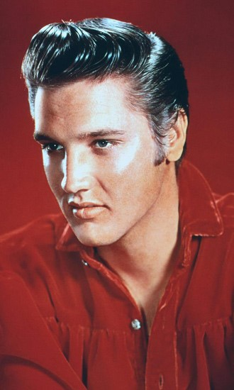

He is literally so fine. Take a look at the picture to your left. Dang.
His music is top tier.
His love songs are the most romantic songs I've ever heard.
Boy can move.

3 of my Favorite Songs by the King
Heartbreak Hotel
One of his more popular songs
Dancability is 10/10
All his performances with this songs are boppin
Love me
So romantic
Has Elvis Presley charm in it
If I Can Dream
Came out at such a significant time when Martin Luther King had died and the country was
struggling. Elvis's wanted to express his political thoughts in this masterpiece.
Really good for belting in the car.
Inspirational, really
The original performance of this song is awesome.
Elvis also acted in many films. Below a performance of his song, Trouble, in one of films, King Creole.